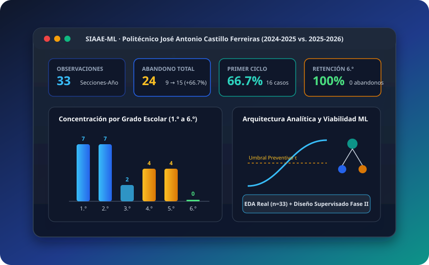
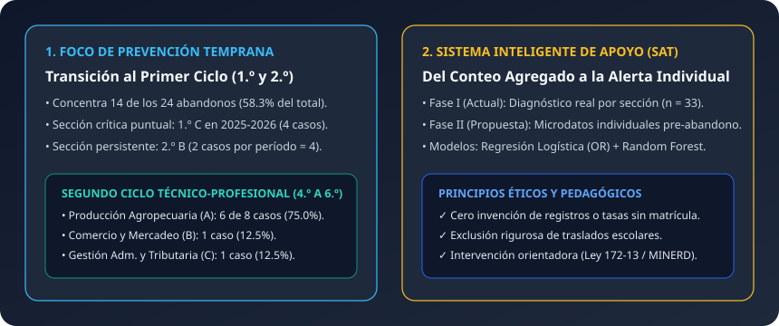
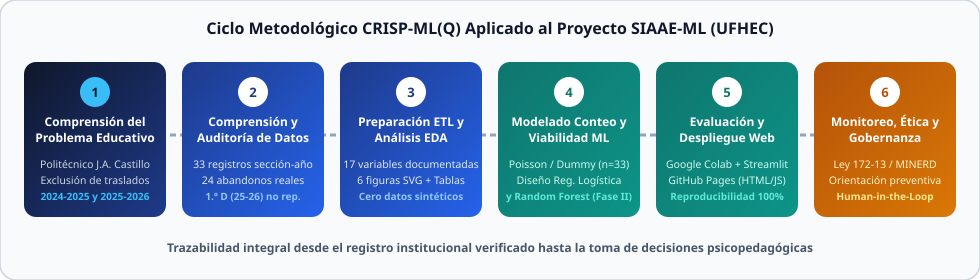
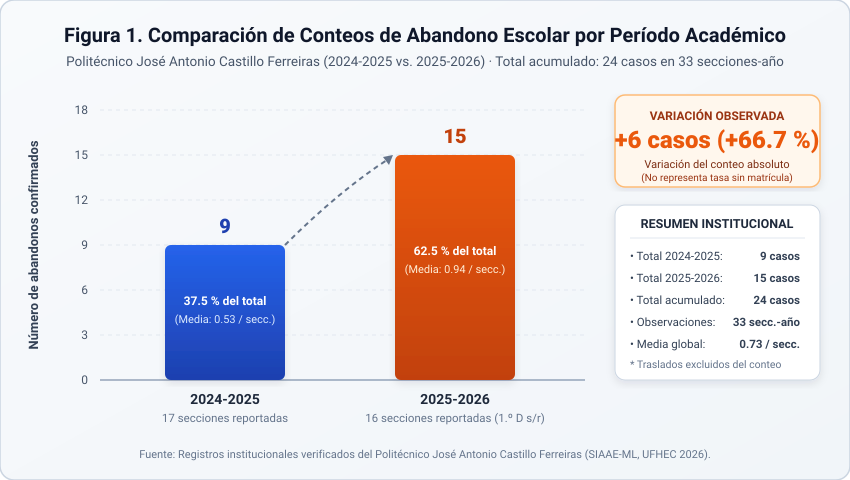
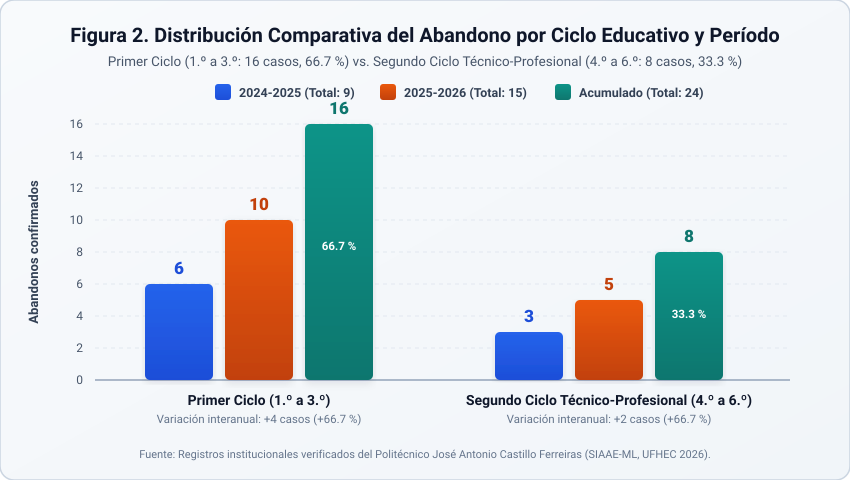
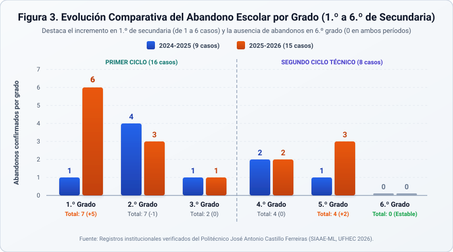
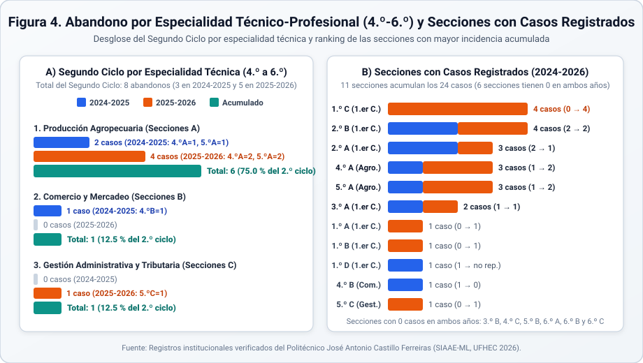
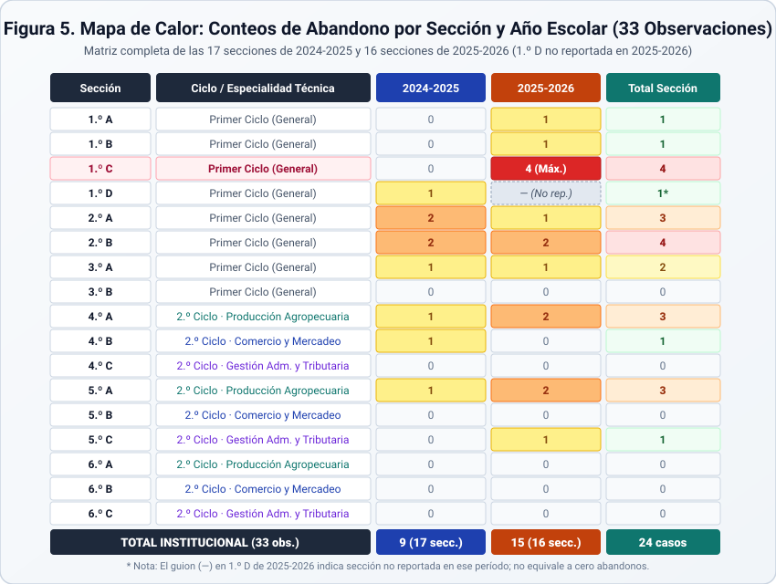
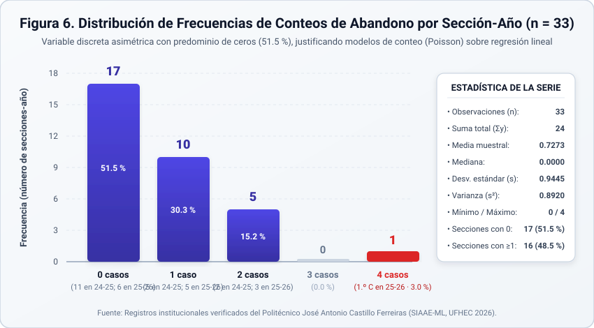

Investigación aplicada de ciencia de datos e inteligencia artificial sobre los registros institucionales verificados del Politécnico José Antonio Castillo Ferreiras (Paso de Moca, Provincia Espaillat, República Dominicana) durante los períodos académicos 2024-2025 y 2025-2026.

El proyecto SIAAE-ML articula estadística descriptiva rigurosa, visualización científica interactiva y diseño metodológico de Machine Learning para transformar registros administrativos de deserción en inteligencia accionable para la gestión psicopedagógica.
Todo el sistema se sustenta de manera exclusiva en la evidencia documental verificada del centro educativo. No se inventan registros estudiantiles, no se imputan matrículas inexistentes y se mantiene la separación estricta entre el análisis estadístico de los 33 conteos por sección y el protocolo futuro para modelos predictivos individuales.
Lejos de etiquetar o estigmatizar al estudiantado, el sistema localiza exactamente en qué ciclos, grados, secciones y especialidades técnico-profesionales se concentra la vulnerabilidad, orientando al Departamento de Orientación y Psicología y al Equipo de Gestión en la asignación oportuna de tutorías y seguimiento familiar.
El abandono escolar constituye uno de los desafíos socioeducativos más críticos de la educación secundaria y técnico-profesional en la República Dominicana, al interrumpir trayectorias formativas y limitar la inserción laboral calificada de los jóvenes.
El paso hacia los primeros grados de secundaria (1.º y 2.º) supone una exigencia adaptativa, curricular y socioemocional elevada. Asimismo, en el Segundo Ciclo Técnico-Profesional (4.º a 6.º), la carga práctica de talleres e inserción técnica demanda un acompañamiento focalizado según cada especialidad.
Un error frecuente en estadísticas administrativas es confundir el traslado escolar (cambio de plantel con continuidad de estudios en otro centro del sistema educativo) con el abandono escolar (interrupción real de la escolaridad durante el año lectivo). En SIAAE-ML, los traslados quedan rigurosamente excluidos del conteo de abandono.
En el Politécnico José Antonio Castillo Ferreiras, el conteo absoluto de abandonos pasó de 9 casos en 2024-2025 a 15 casos en 2025-2026 (+6 casos, +66.7%), haciendo indispensable un sistema estructurado de diagnóstico y viabilidad de alerta temprana.

Definidos en correspondencia directa con la naturaleza agregada de la evidencia verificada y las exigencias académicas de la Maestría en Inteligencia Artificial Aplicada a la Educación y la Tecnología (UFHEC).
2024-2025 y 2025-2026, integrando el análisis estadístico comparativo de los 33 registros sección-año verificados, el modelado exploratorio de conteos y la evaluación técnica de viabilidad de algoritmos supervisados (Regresión Logística y Random Forest) como soporte a la toma de decisiones educativas.
Consolidar y auditar la base de datos institucional verificada de los períodos 2024-2025 y 2025-2026 ($n = 33$ secciones-año y $24$ abandonos), garantizando la exclusión de traslados y la trazabilidad documental en un diccionario de 17 variables.
Identificar patrones de concentración y variación interanual del abandono escolar según período lectivo, ciclo educativo, grado escolar (1.º a 6.º), sección (A, B, C, D) y especialidad técnico-profesional del Segundo Ciclo.
Evaluar metodológica y técnicamente la viabilidad de implementar clasificadores supervisados de Regresión Logística y Random Forest, determinando los requerimientos de microdatos individuales longitudinales necesarios para evitar la falacia ecológica.
Construir un ecosistema computacional reproducible integrado por un cuaderno de Google Colab, una aplicación interactiva en Streamlit y una plataforma web científica para GitHub Pages.
Establecer lineamientos de privacidad estudiantil (Ley No. 172-13 y normativas MINERD) y protocolos de intervención psicopedagógica preventiva con supervisión humana en el bucle (Human-in-the-Loop).
Formular recomendaciones estratégicas focalizadas para el Equipo de Gestión y el Departamento de Orientación del Politécnico José Antonio Castillo en las secciones identificadas con mayor incidencia.
Centro educativo público del Nivel Secundario y Modalidad Técnico-Profesional ubicado en la comunidad de Paso de Moca, Provincia Espaillat, República Dominicana.
Corresponde al Ciclo General del Nivel Secundario, común a todo el estudiantado antes de la diferenciación técnica:
1.º D no reportada).
En los grados 4.º, 5.º y 6.º, la letra de la sección identifica la especialidad formativa:
Se adoptó el estándar CRISP-ML(Q) (Cross-Industry Standard Process for the Development of Machine Learning Applications with Quality Assurance), asegurando control de calidad de datos, trazabilidad documental y prevención de sesgos en sus 6 fases.

Delimitación conceptual del abandono (excluyendo traslados) y auditoría cruzada de las 33 observaciones sección-año entre el informe institucional verificado y el cuaderno computacional.
Ingeniería de variables estructurales (`es_periodo_2`, `ciclo_num`, `es_segundo_ciclo`, `grado_alto`), análisis comparativo multidimensional, regresión de conteos y diseño supervisado para Fase II.
Implementación reproducible en Google Colab, Streamlit Community Cloud y GitHub Pages, bajo principios de protección de datos personales (Ley 172-13) y orientación psicopedagógica.
Explore de forma interactiva los 33 registros sección-año y las matrices comparativas consolidadas del Politécnico José Antonio Castillo Ferreiras.
| Dimensión | Categoría Institucional | Secc. 24-25 | Secc. 25-26 | Aband. 24-25 | Aband. 25-26 | Total Bienio | Variación | % del Total (24) |
|---|---|---|---|---|---|---|---|---|
| Total Institucional | Politécnico José Antonio Castillo Ferreiras | 17 | 16* | 9 | 15 | 24 | +6 (+66.7%) | 100.0% |
| Ciclo Educativo | Primer Ciclo (1.º a 3.º de Secundaria) | 8 | 7 | 6 | 10 | 16 | +4 (+66.7%) | 66.7% |
| Ciclo Educativo | Segundo Ciclo Técnico-Profesional (4.º a 6.º) | 9 | 9 | 3 | 5 | 8 | +2 (+66.7%) | 33.3% |
| Grado Escolar | 1.º de Secundaria (Primer Ciclo) | 4 | 3 | 1 | 6 | 7 | +5 (+500.0%) | 29.2% |
| Grado Escolar | 2.º de Secundaria (Primer Ciclo) | 2 | 2 | 4 | 3 | 7 | -1 (-25.0%) | 29.2% |
| Grado Escolar | 3.º de Secundaria (Primer Ciclo) | 2 | 2 | 1 | 1 | 2 | 0 (0.0%) | 8.3% |
| Grado Escolar | 4.º de Secundaria (Segundo Ciclo Técnico) | 3 | 3 | 2 | 2 | 4 | 0 (0.0%) | 16.7% |
| Grado Escolar | 5.º de Secundaria (Segundo Ciclo Técnico) | 3 | 3 | 1 | 3 | 4 | +2 (+200.0%) | 16.7% |
| Grado Escolar | 6.º de Secundaria (Segundo Ciclo Técnico) | 3 | 3 | 0 | 0 | 0 | 0 (0.0%) | 0.0% |
| Especialidad (2.º Ciclo) | Producción Agropecuaria (Secciones A: 4.º-6.º) | 3 | 3 | 2 | 4 | 6 | +2 (+100.0%) | 25.0% (75% del 2.º Ciclo) |
| Especialidad (2.º Ciclo) | Comercio y Mercadeo (Secciones B: 4.º-6.º) | 3 | 3 | 1 | 0 | 1 | -1 (-100.0%) | 4.2% (12.5% del 2.º Ciclo) |
| Especialidad (2.º Ciclo) | Gestión Administrativa y Tributaria (Secciones C: 4.º-6.º) | 3 | 3 | 0 | 1 | 1 | +1 (N/A) | 4.2% (12.5% del 2.º Ciclo) |
| ID | Año Escolar | Ciclo Educativo | Grado | Sección | Grupo | Nivel / Especialidad Técnico-Profesional | Abandonos | Estado |
|---|
Galería completa de las 6 figuras analíticas en formato vectorial de alta resolución (SVG) generadas a partir de los 33 registros verificados, con su respectiva interpretación académica.





1.º C (4 casos en 2025-2026), la persistencia de 2.º B (2 y 2 casos) y la condición de 1.º D como no reportada en 2025-2026.

Arquitectura modular basada en software libre y estándares abiertos para ciencia de datos, aprendizaje automático y despliegue web reproducible.
Procesamiento tabular, validación de integridad de datos, ingeniería de características (ETL) y generación de matrices comparativas.
Modelado exploratorio de conteos (DummyRegressor y PoissonRegressor con validación LeaveOneGroupOut) y marco técnico para clasificadores supervisados.
Visualización científica estática de alta resolución y gráficos interactivos dinámicos para exploración multidimensional.
Cuaderno reproducible en Google Colab, aplicación interactiva en Streamlit Community Cloud y portal web en capas para GitHub Pages.
Fundamentación metodológica de la diferencia entre el modelado exploratorio de conteos por sección ($n = 33$) y la predicción supervisada individual mediante Regresión Logística y Random Forest.
Estima la probabilidad condicional de abandono individual $P(y_i = 1 \mid \mathbf{x}_i) = \frac{1}{1 + e^{-(\beta_0 + \boldsymbol{\beta}^\top \mathbf{x}_i)}}$ a partir de indicadores medidos en el primer bimestre.
Ensamble no paramétrico de árboles de decisión ($\hat{P}_{\text{RF}} = \frac{1}{B}\sum_{b=1}^{B} \hat{P}_{T_b}$) entrenados mediante bagging y selección aleatoria de atributos.
Ajuste los parámetros teóricos para observar cómo la combinación lineal $z = \beta_0 + \beta_1 x$ se transforma en probabilidad $\sigma(z) \in (0, 1)$ y en razón de momios ($\text{OR} = e^{\beta_1}$). (Simulación matemática conceptual, no entrenada sobre alumnos individuales).
La aplicación app.py despliega el cuadro de mando interactivo en dos pestañas especializadas alimentadas por los archivos verificados de data/processed/.
Incluye filtros dinámicos en barra lateral por período (2024-2025 y 2025-2026), ciclo educativo, grado (1.º a 6.º) y especialidad técnico-profesional; 4 tarjetas KPI; 6 gráficos interactivos en Plotly; matriz de calor institucional y descarga directa en CSV.
Desarrolla la comparación conceptual y matemática entre Regresión Logística y Random Forest, el simulador pedagógico de curvas sigmoides e impureza de Gini, los resultados del modelado de conteos (PoissonRegressor) y la matriz de requisitos para Fase II.
main del repositorio oficial: https://siaae-ml-abandono-escolar-fkdckk6h2ejqtmvhqzq9a6.streamlit.app/
Espacio reservado para la presentación audiovisual ejecutiva del proyecto académico, a desarrollarse en el Bloque D mediante la herramienta BRAG o alternativa compatible verificada.
De acuerdo con el protocolo de integridad académica del proyecto SIAAE-ML, este contenedor permanece reservado hasta la verificación técnica de la herramienta latent-spaces/brag y la producción efectiva del video explicativo en español.
Estado actual: En espera de autorización del Bloque DIng. Adonamil Cruz Evangelista
Maestrante en Inteligencia Artificial Aplicada a la Educación y la Tecnología — Universidad Federico Henríquez y Carvajal (UFHEC).
Investigación orientada al fortalecimiento de la permanencia escolar y la toma de decisiones basada en datos en el Politécnico José Antonio Castillo Ferreiras.
Derivadas estrictamente de los hallazgos empíricos comprobados en los períodos 2024-2025 y 2025-2026 y de la evaluación de viabilidad de Machine Learning.
2024-2025 a 15 casos en 2025-2026 (+6 casos, +66.7% en el conteo absoluto), elevando el promedio por sección de 0.5294 a 0.9375.1.º a 3.º) concentra el 66.7% de todos los abandonos (16 de 24 casos), siendo 1.º y 2.º de secundaria los grados de mayor riesgo (7 casos cada uno, 58.3% del total).6.º grado registró 0 abandonos en ambos años.1.º C (4 casos en 2025-2026), 2.º B (4 casos en el bienio), 2.º A (3 casos), 4.º A (3 casos) y 5.º A (3 casos).4.º A y 5.º A para reducir su brecha frente a las demás especialidades técnicas.